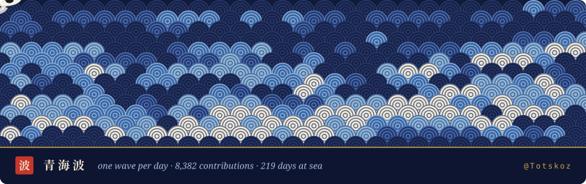

@Totskoz — profile drafts
Built from your real last-12-months contribution calendar, shown at GitHub README width.
1山水 · Ink Mountains
Each week is a peak — taller means more commits. One bird per thousand contributions; the red sun hangs by your biggest week. Mist drifts, a boat crosses the year.

2漫画 · Chapter of the Year
Your year as a manga page: flickering focus lines around the total, a shout panel for your best day, and the calendar drawn as screentone dots.

3青海波 · Indigo Tide
A wave-print textile where every scale is one day, read like text. Busy days crest white; koi drift across the cloth.

4灯籠流し · Lantern Festival
One lantern per week: more commits float higher and glow brighter. Empty weeks leave an unlit lantern on the water.

5夜桜 · Pixel Hanami (dark mode)
The night version shown to visitors using GitHub dark theme: moon and stars, lanterns in the blooming trees, fireflies, and a lawn where busy days glow brightest.

6花見 · Pixel Hanami
Pixel-art cherry blossom park: one sakura tree per month (fuller bloom = more commits), the calendar is a petal-strewn lawn, cats nap under your three busiest months, and a sprout spirit hops on your best day.
